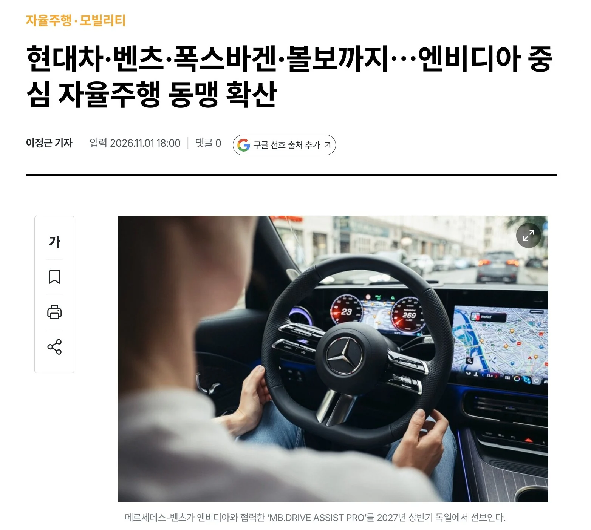

국토부: ㅎㅎ...ㅈㅅ..ㅋㅋ

국토부: ㅎㅎ...ㅈㅅ..ㅋㅋ
하지만 인정을 안 함 ㅋㅋ
의외가 아니라 대놓고 갈라파고스여. 그러니까 이 좆만한 나라에서 그래도 세계에서 먹히는 대기업이 몇 개 나왔지
ㅇㅇ 돌린거긴해ㅋㅋ
갈라파고스?
위에 동맹인 나라들도 FSD 안될껄.
유럽도 자동차 만드는 나라들은 자국 산업 지키는데 필사적임.
독일 영국 프랑스 이탈리아중에 FSD되는 나라 찾아봐라.
eu라고 한덩어리가 아님.
eu는 ai 낙후국이니깐... 선두인 미국중국 봐야지 패망직전의 후발주자 보고 안주??ㅋㅋㅋㅋㅋㅋㅋㅋㅋㅋㅋㅋㅋㅋ 북미니 중국처럼 내수도 안되는데 두개시장 버릴작정이야???
반꼴찌보고 안도하는 딱그런샠기들 학창시절에도 공부못하는애들 수준이노. 전교 일등이 한두개 틀려서 울거나 저기압된거 이해못하던데
ㄴㄴ 지금 eu국가들도 fsd 풀려하고있고 의외로 독일도 자율주행 기술 가지고있음 당장 기사만 봐도 독일 교통부 장관측에서 찬성하고 이번12월인가 eu회의 때 적극 추진 도와준다함
이름이 fsd가 아닌 어시스트 느낌으로 변경해서 나와서 그렇지 기능은 fsd랑 똑같음
지금 찬성측 국가들 보면 fsd eu전체에서 적용될 가능성 높음
https://www.theguru.co.kr/mobile/article.html?no=107940
높다고? 독일 합쳐서 30%찬성률에 독일 자율주행 기술 떨어져서 실질적으로 현기나 매한가지 상태인데?
65% 넘겨야 eu전체 사용 가능임.
그리고 독일 자율주행 제대로 돌아가는거 뭐 있나 찾아봐라 하나도 없지.
무식하면 좀 찾아보기나 해라.
독과점의 폐해지. 경쟁자가 없으면 발전도 없음
예로 중국은 전기차 경쟁 브랜드만 100개가 넘가보니 발전 개빠름
경쟁도 경쟁이고 지원도 빠방함
걍 가격으론 승부가 안돼
올해 모y 4999 예약건거 취소하고.. fsd 중국산정식출시+그시점 hw 4.1이나 4.5, 5 최신 하드웨어 모y나 모3 사야겠다..
그런당신에게 아이오닉6!
ev6 몰아봤어!
난 그차를 몰아본적이 있어요!!!
fsd는 기대안함 dcas 02 승인이라도
일본은 도요타도 있는데, 올해 FSD 개방함.
도요다는 1황이라 자신있어요
Fsd개발하려면 돈이랑 고용유연화가되어야하는데 한국구조상 한참걸리지.. 소프트웨어개발은 특히 유연성이 커야하고 재배치하면서 성과가 낮으면 짜르고 임금 더주고 데려와야하는데 한국은 그러지못하고 첫단추 잘못끼우면 그냥 비싼값주고 인재는 계속데려오고 배는 이상한대로 향하고 조직은 비대해지고..
불가능함 고용유연화 시도하는순간
그거 안정화될때까지 정치안하겠다는거임
외주는?
이제 전세계가 다 FSD쓰고 인프라도 FSD쓰는데 우리만 독자 갈라파고스라 수출도 못하는 신세돼는거 아니냥
존나 느린 반도체국
국내 기업이 비슷한 경쟁력을 가질수있게 시간버는건가?
한전부지가 10조였는데 그걸 fsd 같은 기술 만드는 데 부었으면 부동산보다 훨씬 벌었겠네 ㅉㅉ
대한민국은 부동산이지라
돈이 문제가 아니라 전략이 문제라
딱 아이폰 들어오기 전 와이파이 막는 그 꼬라지 같은데, 위고비도 그렇고 자율주행도 그렇고
미국산 Y3 테슬라 왜 수입 안하는거야
Fsd 사놓고 몇년째 못 쓰는 애들은 존나 빡치겠다
어차피 fsd 아니더라도 테슬라가 가성비인 세상에 이게 뭔 의미없는짓이냐 어차피 현대차 살사람은 현대사고 테슬라 살사람은 테슬라 살텐데
역시 현토부야 ㅋㅋㅋ
자율주행은 기대도 안했고 주변사물 인식이나 잘했으면
나도 이래서 첫 차는 걍 현기중고차 사고 다음 차부터 테슬라 FSD 되면 살듯
30~32년이면 지금 테슬라는 대부분 폐차네
의외로 갈라파고스여